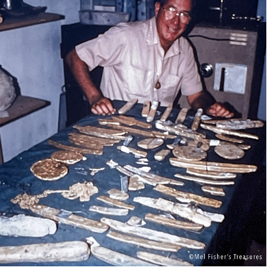
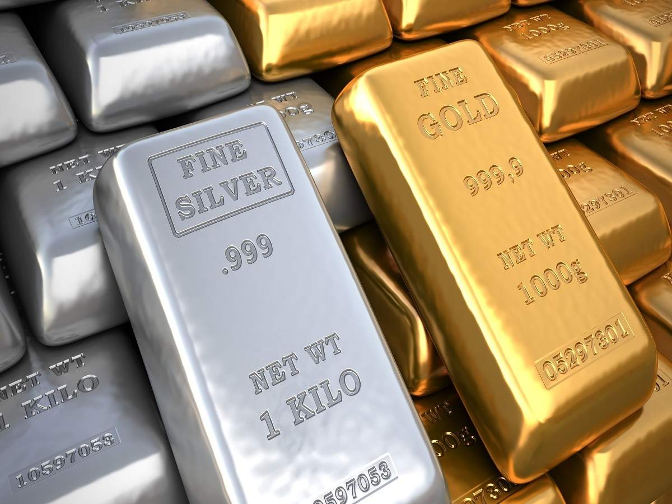
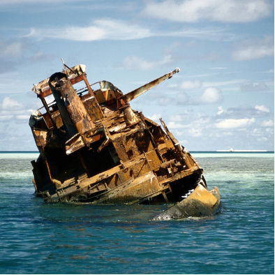
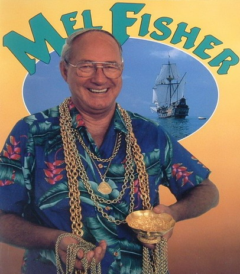
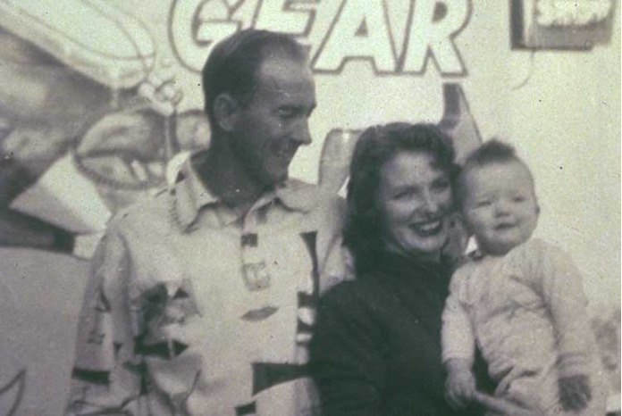

About
01
Founder
Mel Fisher was the one who discovered the shipwreck, at age


02
Value
The shipwreck contained 40 tons of gold and 40 tons of silver in addition with 70 tons of columbium emeralds.
03
Recovery
The people who were trying to recover the cargo were the Spanish salvors and they failed to recover it because they didn’t have the tools to do it.


04
Section 4
The most well knows item in the treasure was the “money chain” it’s a gold chain that Mel Fisher wore.
05
Section 5
Three members of his crew (a diver, his son, and his wife) lost their lives during this quest when their boat capsized.
